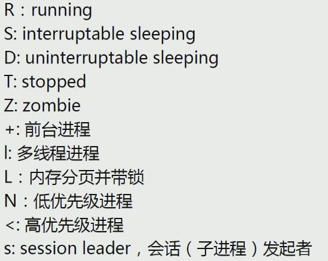
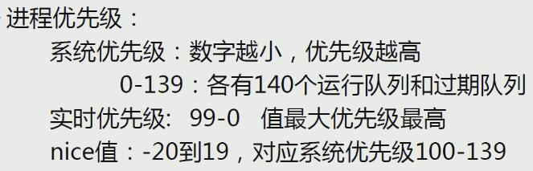
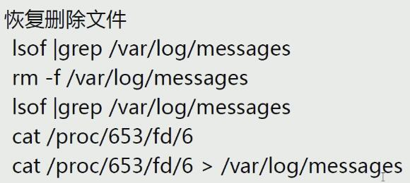

进程管理工具
lscpu：显示cpu信息pstree -p：打印进程树ps：(process state)，Linux系统各进程的相关信息均保存在/proc/PID下BSD选项，选项前没有
-：a：打印所有终端中的进程STAT：

x：与终端无关的进程，例如守护进程u：额外显示进程的USER，CPU/MEM占比，RSS（常驻内存集，不包括交换分区）与VSZ（分配给进程的虚拟内存，包括交换分区），START（开始运行的时间）。f：显示进程父子关系k -%cpu：倒序排序显示cpu占比，-表示倒序o：只显示某些选项，后面跟要显示的选项；例如ps axo psr：显示命令使用哪个CPU核Linux优先级：
o ni,pri,rtprio
搜索进程
按预定义的模式：
pgrep [options] pattern：-u uid：有效用户-U uid：运行命令者-t terminal：与指定终端相关的进程-l：显示进程名，例如pgrep -l '^ba.*'-a：显示完整格式的进程名-P pid：显示指定进程的子进程
按程序名称:
pidof 程序名
进程管理工具：
top，内置命令：- 排序：
P：按%CPU；M：按%MEM；T：按累积占据CPU时长(TIME+) 首部信息显示：
- uptime信息：
l - tasks及cpu信息：
t - cpu内核分别显示：
1 - 内存信息：
m
- uptime信息：
退出：
q- 修改刷新时间间隔：
s - 终止进程：
k - 保存当前进程信息：
W 栏位信息：
us：用户空间sy：内核空间ni：调整nice时间id：空闲wa：等待IO时间hi：硬中断si：软中断st：虚拟机偷走的时间
选项：
-b：显示所有进程（默认只显示前一部分）-p：指定显示某些进程-H：线程模式；示例：top -H -p PID，指定显示某个进程的所有线程
EPEL源的
htop，功能更丰富的进程管理工具
- 排序：
内存空间使用状态：
free-h：易读格式-s n：指定刷新间隔为n秒
查看虚拟内存使用状态：
vmstat系统监控工具：
iostat：统计CPU和设备IO信息iftop：显示带宽使用情况，EPEL源dstat：替代iostat,vmstat,ifstatiotop：I/O监视器nload：查看网络实时吞吐量lsof：list open files；恢复文件：
进程信号与计划任务实现